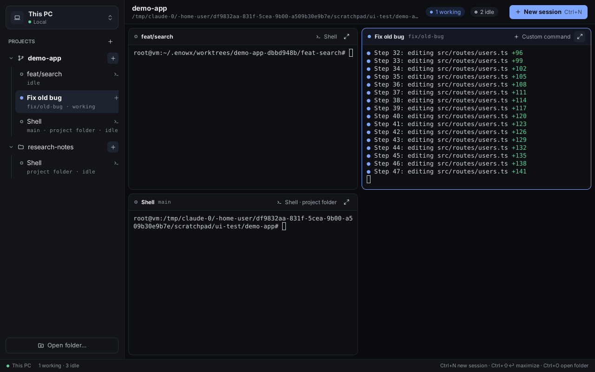

Run coding agents in parallel, wherever they run best.
enowX is a lightweight, open source orchestrator for Claude Code, Codex and forty more agents. Each works in its own git worktree, on your machine or on your own server, and you watch, compare and merge from one native app. No cloud, no accounts.
macOS, Linux and Windows. Apache-2.0.

Spawn, watch, compare, merge
Everything serves the loop of running agents: nothing you'll wait for, nothing you won't use.
A worktree per session
Every session can get its own branch in its own worktree, so agents never overwrite each other. Your project's .env and setup come along.
Terminal or chat
Real terminals for any agent. Claude Code and Codex also show as a chat, with tool calls, diffs, and messages you can edit and send again.
Review and merge
Each session's changes against its base: comment lines back to the agent, commit, push, open a pull request, merge.
Pipelines
Plan, implement and review a task with agents one after another, each starting from what the last ended with.
Automations
A prompt on a schedule: weekday triage, nightly dependency updates, a weekly summary. They run while you're away.
Preview what they build
Dev servers show in a built-in browser with hot reload. Pick an element and hand it to the agent. Desktop apps open in a window of their own.
A command line
enowx spawn, wait, read, send: script sessions, or let an agent start and follow other agents.
Status you can trust
From the agents' own hooks: working, needs you, done. Notifications and unread marks for what finished while you looked away.
Any agent that runs in a terminal
Over forty agents are built in, started the way each takes a first prompt, with its permission flags, and its folder trusted. Anything else runs as a command.
Your laptop is just the screen
When your machine struggles, run the same workspace on your own server. The app connects over SSH, installs its daemon, and sessions keep running with the laptop closed.
One-click setup
Bring a blank server what your machine has: toolchains, git, gh, agents and their sign-in, skills and MCP servers.
Create one
At Hetzner, DigitalOcean or Vultr, with your own API token, from the app. Ubuntu, Debian, Fedora, Arch, Alpine and openSUSE are supported.
Same app, same features
Ports forward to your machine, files drop onto remote terminals, and everything works the same as locally.
make build ./bin/enowx # this machine ./bin/enowx --remote you@your-server # a server
No cloud
enowX runs no service: no account, no relay, no telemetry. The app talks to your machine and your servers directly, and secrets stay in your keychain unless you say otherwise.